1. Πρώτα βήματα · Πρώτη σύνδεση δέκτη & NTRIP · Οθόνη & εργαλεία · 2. Σύνδεση δέκτη · 3. NTRIP · 4. Base / Rover · 5. Αποτύπωση · 6. Ποιοτικός έλεγχος · 7. Χάραξη · 8. COGO · 9. Συστήματα συντεταγμένων · Εξωτερικό · 10. Χάρτης & υπόβαθρα · 11. Αρχεία & email · 12. Φωτογραφίες · Μπαταρία · Άδεια χρήσης
1. Πρώτα βήματα
- Εγκατάσταση του HEXIS_PAD.apk σε κινητό ή tablet Android (επίτρεψε «εγκατάσταση από άγνωστες πηγές» για τον browser/τα αρχεία).
- Την πρώτη φορά ζητείται ο κωδικός άδειας (μορφή PAD-XXXX-XXXX-XXXX). Γράψε τον και πάτα Ενεργοποίηση — χρειάζεται ίντερνετ μόνο αυτή τη φορά. Δες Άδεια χρήσης.
- Άνοιγμα → δίνεται άδεια Bluetooth, θέσης και κάμερας όταν ζητηθεί.
- Σύνδεση με τον δέκτη και το NTRIP την πρώτη φορά: δες Πρώτη σύνδεση βήμα-βήμα.
- Η εφαρμογή ανοίγει με ένα έργο. Μενού → Έργα για νέο έργο, μετονομασία, αλλαγή.
- Η πάνω μπάρα δείχνει: λύση (FIX πράσινο, FLOAT πορτοκαλί, SINGLE/DGPS κόκκινο), σH / σV (m, 1σ), δορυφόρους, PDOP, ηλικία διορθώσεων, ένδειξη QC και NTRIP. Πάτημα στη μπάρα → αναλυτική κατάσταση GNSS.
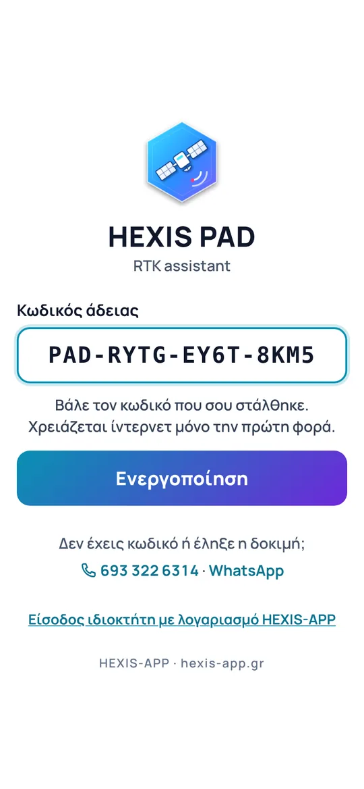
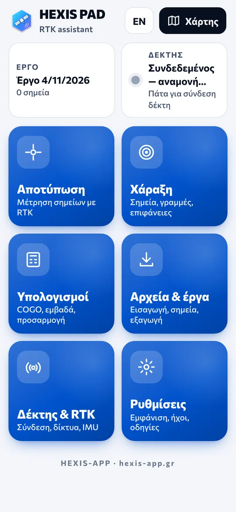
Πρώτη σύνδεση βήμα-βήμα: δέκτης και NTRIP
Τα βήματα αυτά γίνονται μία φορά. Μετά η εφαρμογή θυμάται τον δέκτη και το δίκτυο: ανοίγεις την εφαρμογή, ανάβεις τον δέκτη, και συνδέονται μόνα τους.
Πριν ξεκινήσεις, έχε έτοιμα: τον δέκτη φορτισμένο, το κινητό με δεδομένα κινητής (4G/5G) ανοιχτά, και τα στοιχεία της συνδρομής NTRIP: caster host, port, χρήστη και κωδικό. Τα δίνει το δίκτυο μόνιμων σταθμών όπου έχεις συνδρομή.
Α. Σύνδεση δέκτη μέσω Bluetooth
- Άναψε τον δέκτη και περίμενε μέχρι να ανάψει η ένδειξη Bluetooth.
- Σύζευξη στο Android: Ρυθμίσεις του κινητού → Bluetooth → Σύζευξη νέας συσκευής → διάλεξε τον δέκτη. Το όνομά του είναι συνήθως ο σειριακός αριθμός (S/N) από το ταμπελάκι κάτω από τον δέκτη. Αν ζητήσει κωδικό: 1234 ή 0000.
Πιο γρήγορα: την πρώτη φορά η εφαρμογή δείχνει την οθόνη «Πρώτη σύνδεση δέκτη». Το κουμπί «Σύζευξη δέκτη (Bluetooth)» ανοίγει κατευθείαν τις ρυθμίσεις Bluetooth. Αν ο δέκτης έχει NFC, αρκεί να ακουμπήσεις το κινητό πάνω του. - Γύρνα στο HEXIS PAD. Βρίσκει τον δέκτη και συνδέεται μόνο του. Αν δεν συνδεθεί: Αρχική → Δέκτης & RTK → Σύνδεση δέκτη → Bluetooth → διάλεξε τον δέκτη → Σύνδεση.
- Την πρώτη φορά το Android ρωτά για την άδεια «Συσκευές κοντά». Πάτα Να επιτρέπεται.
- Έλεγχος: η πάνω μπάρα δείχνει λύση SINGLE ή DGPS (κόκκινο) και αριθμό δορυφόρων. Ο δέκτης στέλνει θέση. Το RTK έρχεται με το NTRIP (βήμα Γ).
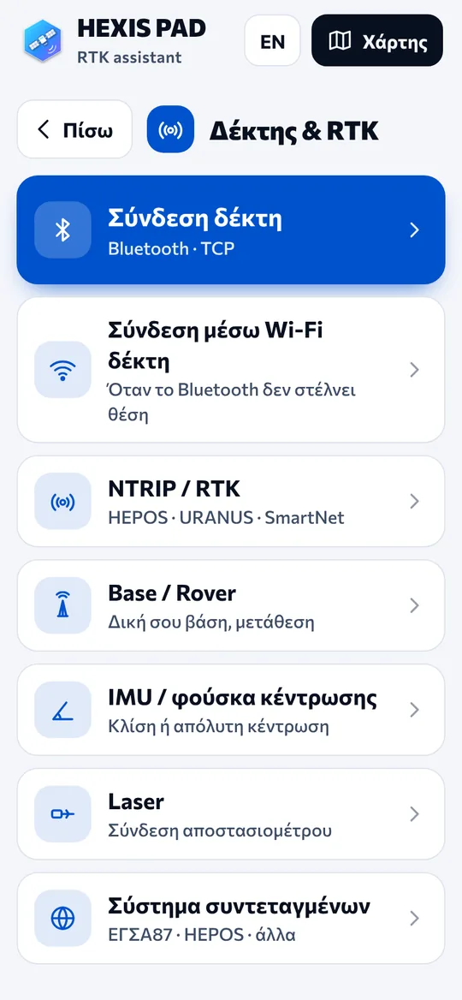
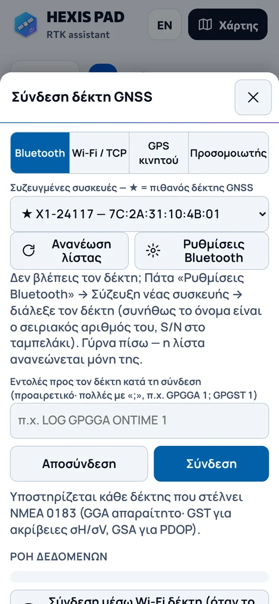
Β. Σύνδεση μέσω Wi-Fi του δέκτη (αν το Bluetooth δεν στέλνει θέση)
- Αρχική → Δέκτης & RTK → Σύνδεση μέσω Wi-Fi δέκτη.
- Διάλεξε κατασκευαστή και μετά τον δέκτη από τη λίστα.
- Το Android ανοίγει το παράθυρο «Αναζήτηση συσκευών». Διάλεξε το δίκτυο Wi-Fi του δέκτη → Σύνδεση. Το Wi-Fi του δέκτη χρησιμοποιείται μόνο από την εφαρμογή, ενώ το ίντερνετ για το NTRIP συνεχίζει από τα δεδομένα κινητής.
- Από εκεί και πέρα, όταν ανάβει ο δέκτης, η κάρτα Δέκτης στην αρχική γράφει «Βρέθηκε ο δέκτης · πάτα για σύνδεση». Την πατάς και συνδέεται. Το παράθυρο «Αναζήτηση συσκευών» του Android ανοίγει μόνο όταν το ζητήσεις εσύ, ποτέ μόνο του. Αν το κινητό είναι ήδη συνδεδεμένο στο Wi-Fi του δέκτη, η σύνδεση γίνεται αυτόματα, χωρίς παράθυρο.
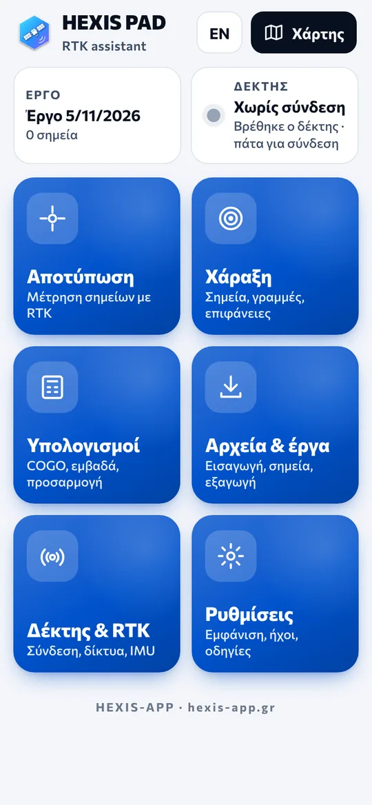
Γ. NTRIP: διορθώσεις RTK από δίκτυο μόνιμων σταθμών
- Αρχική → Δέκτης & RTK → NTRIP / RTK.
- Δίκτυο μόνιμων σταθμών: διάλεξε το δίκτυο της συνδρομής σου (π.χ. HEPOS (Κτηματολόγιο)). Για άλλο δίκτυο διάλεξε «Άλλο δίκτυο / δικός μου caster» και γράψε Caster host και Port (συνήθως 2101).
- Γράψε Χρήστη και Κωδικό της συνδρομής.
- Πάτα Λίστα: φέρνει τα mountpoints του δικτύου. Διάλεξε αυτό που σου έδωσε το δίκτυο, συνήθως ένα VRS με μορφή MSM.
- Άφησε τσεκαρισμένο το «Αποστολή GGA (απαραίτητο για VRS / δίκτυα)». Τσέκαρε και το «Αυτόματη έναρξη με τη σύνδεση του δέκτη», ώστε να ξεκινά μόνο του κάθε φορά.
- 💾 Προφίλ → αποθήκευσε τα στοιχεία με ένα όνομα. Αν έχεις δύο δίκτυα ή λογαριασμούς, αλλάζεις με ένα πάτημα.
- Πάτα Έναρξη. Η ένδειξη NTRIP στην πάνω μπάρα γίνεται πράσινη όταν έρχονται διορθώσεις. Μέσα σε λίγα δευτερόλεπτα, έως 1–2 λεπτά με κακή ορατότητα, η λύση περνά από FLOAT (πορτοκαλί) σε FIX (πράσινο).
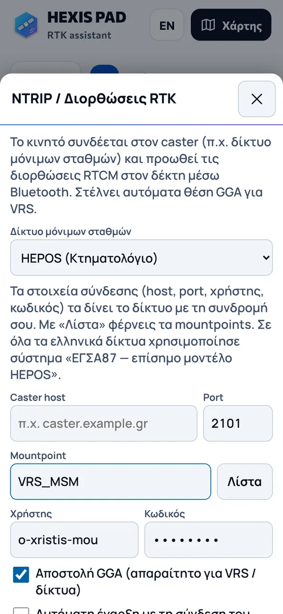
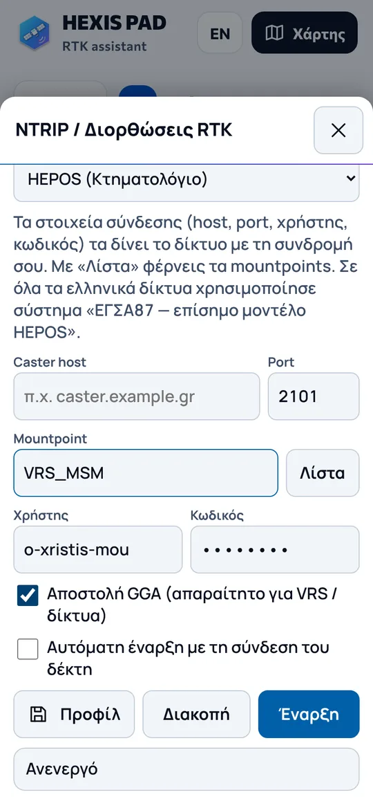
Δ. Έλεγχος πριν από τη δουλειά
- Ύψος κεραίας: γράψε το ύψος του κονταριού στο πεδίο Ύψος κεραίας στο κάτω μέρος της οθόνης. Αν ο δέκτης έχει offset κέντρου φάσης, ορίζεται μία φορά στη Σύνδεση δέκτη. Λάθος εδώ σημαίνει λάθος σε όλα τα υψόμετρα.
- Σύστημα συντεταγμένων: Αρχική → Δέκτης & RTK → Σύστημα συντεταγμένων → ΕΓΣΑ87 (HEPOS). Με αυτό εφαρμόζεται το επίσημο πλέγμα μετασχηματισμού και για οριζοντιογραφία και για υψόμετρα.
- FIX με μικρά σH / σV στην πάνω μπάρα και ένδειξη QC πράσινη.
- Μέτρησε ένα γνωστό σημείο (π.χ. τριγωνομετρικό ή σημείο με γνωστές συντεταγμένες και υψόμετρο) και σύγκρινε, πριν από αποτύπωση ή χάραξη.
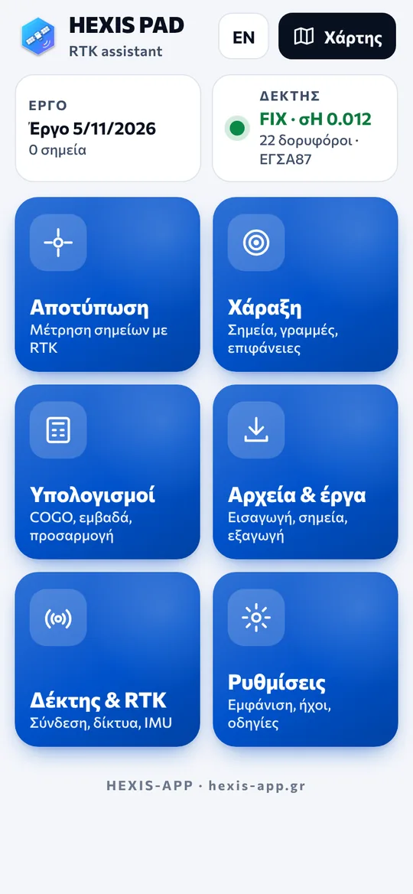
Ε. Αν κάτι δεν πάει καλά
| Τι βλέπεις | Τι κάνεις |
|---|---|
| Ο δέκτης δεν φαίνεται στη λίστα | Δεν έχει γίνει σύζευξη. Σύνδεση δέκτη → ⚙ Ρυθμίσεις Bluetooth → Σύζευξη νέας συσκευής. |
| Σφάλμα όταν πατάς Σύνδεση | Ο δέκτης είναι συνδεδεμένος σε άλλη συσκευή ή στην εφαρμογή του κατασκευαστή. Κλείσε την άλλη σύνδεση, ή σβήσε και άναψε τον δέκτη, και ξαναπάτα Σύνδεση. |
| «Συνδέθηκε» αλλά δεν έρχεται θέση | Ο δέκτης δεν στέλνει NMEA. Η εφαρμογή του στέλνει μόνη της εντολές ενεργοποίησης· περίμενε λίγα δευτερόλεπτα. Αλλιώς δοκίμασε τη σύνδεση μέσω Wi-Fi (Β) ή πάτα 🔎 Δείγμα δεδομένων δέκτη και στείλε το για υποστήριξη. |
| «Δεν υπάρχει internet για το NTRIP» | Άνοιξε τα δεδομένα κινητής. Αν το κινητό είναι συνδεδεμένο στο Wi-Fi του δέκτη από τις Ρυθμίσεις, βγες από αυτό και σύνδεσε τον δέκτη από την εφαρμογή (Β). |
| Η Λίστα mountpoints μένει άδεια ή βγαίνει σφάλμα NTRIP | Έλεγξε caster host και port. Αν το σφάλμα αφορά χρήστη ή κωδικό, έλεγξε τα στοιχεία και ότι η συνδρομή είναι ενεργή. |
| NTRIP πράσινο αλλά μένει DGPS ή FLOAT | Έλεγξε ότι είναι τσεκαρισμένο το «Αποστολή GGA» και ότι διάλεξες το σωστό mountpoint (VRS / MSM). Μετακινήσου σε σημείο με ανοιχτό ουρανό, μακριά από κτίρια και δέντρα. |
Αρχική οθόνη, χάρτης και στήλη εργαλείων
Αρχική οθόνη (κουμπί ⌂ στη στήλη): πάνω βλέπεις το Έργο και τον Δέκτη, με πράσινη, πορτοκαλί ή κόκκινη τελεία για FIX, FLOAT ή χωρίς λύση. Από κάτω υπάρχουν έξι κατηγορίες, όλες στο ίδιο μπλε:
- Αποτύπωση: έναρξη αποτύπωσης, συνεχής, static, σημείο με laser, δυσπρόσιτο, φωνητικές εντολές.
- Χάραξη: σημεία, γραμμή, δάπεδα/κλίσεις, γωνίασμα, κάνναβος.
- Υπολογισμοί: όλα τα COGO, απόσταση/αζιμούθιο, εμβαδόν, τομή ευθειών, κλίση, τοπική προσαρμογή.
- Αρχεία & έργα: εισαγωγή, σημεία, επικόλληση, εξαγωγή/email, έργα.
- Δέκτης & RTK: σύνδεση δέκτη, NTRIP, base/rover, IMU/φούσκα, laser, σύστημα συντεταγμένων.
- Ρυθμίσεις: ρυθμίσεις, εργαλεία στήλης, οδηγίες χρήσης.
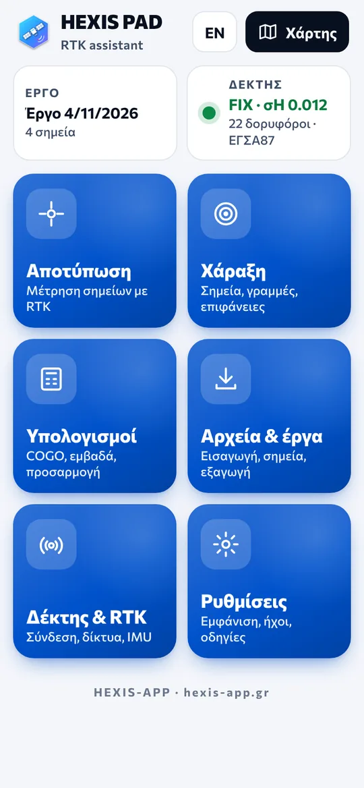
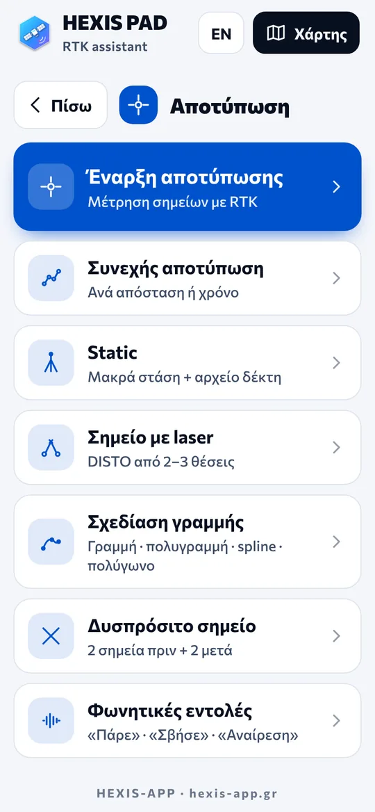
Όταν πατάς μια κατηγορία, βλέπεις μόνο τις επιλογές της. Η πρώτη, η βασική, είναι το μεγάλο χρωματιστό κουμπί. Με ‹ Πίσω, ή με το κουμπί επιστροφής του κινητού, γυρίζεις στις κατηγορίες. Το κουμπί Χάρτης πάνω δεξιά σε πηγαίνει κατευθείαν στον χάρτη.
Χάρτης σε όλη την οθόνη: η στήλη εργαλείων είναι μαζεμένη αριστερά, ώστε ο χάρτης να πιάνει όλο το πλάτος. Ανοίγει με πάτημα ή σύρσιμο από την αριστερή άκρη της οθόνης (μπλε γλωσσίδι ›), και κλείνει μόλις διαλέξεις εργαλείο, μόλις πατήσεις στον χάρτη, ή μόνη της μετά από λίγα δευτερόλεπτα. Τα εργαλεία της τα προσθέτεις και τα αφαιρείς από «Εργαλεία στήλης». Αν τη θέλεις μόνιμα ανοιχτή: Ρυθμίσεις → Οθόνη → Στήλη εργαλείων → «Πάντα ανοιχτή». Πάνω φαίνονται FIX, H/V, δορυφόροι, Age, QC και NTRIP, και από κάτω οι συντεταγμένες της θέσης.
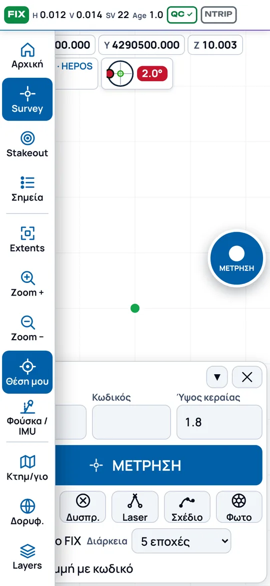
2. Σύνδεση δέκτη
- Κάνε σύζευξη του δέκτη από τις Ρυθμίσεις Bluetooth του Android.
- Μενού → Σύνδεση δέκτη → Bluetooth, διάλεξε τη συσκευή → Σύνδεση.
- Εναλλακτικά: Wi-Fi / TCP (IP και θύρα του δέκτη), GPS κινητού (μόνο προσανατολισμός) ή Προσομοιωτής (εκπαίδευση — παρατεταμένο πάτημα στον χάρτη = «περπάτα εκεί»).
Υποστηρίζεται κάθε δέκτης NMEA 0183. Απαραίτητο το GGA· το GST δίνει τις ακρίβειες σH/σV και το GSA το PDOP. Αν ο δέκτης δεν τα στέλνει, γράψε εντολή στο πεδίο «Εντολή αρχικοποίησης» ή χρησιμοποίησε Base / Rover → Εντολές rover.
Αυτόματη σύνδεση — χωρίς ρυθμίσεις
- Πρώτη φορά: αν δεν υπάρχει δέκτης, βγαίνει η οθόνη «Πρώτη σύνδεση δέκτη». Άναψε τον δέκτη, πάτα «Σύζευξη δέκτη» και διάλεξέ τον στη λίστα του Bluetooth. Αν ο δέκτης έχει NFC, ακούμπησε το κινητό πάνω του. Γύρνα πίσω και η εφαρμογή τον βρίσκει και τον συνδέει μόνη της.
- Κάθε επόμενη φορά: ανοίγεις την εφαρμογή και ανάβεις τον δέκτη, με οποιαδήποτε σειρά. Η εφαρμογή συνδέεται μόνη της, και αν ο δέκτης είναι ακόμα σβηστός ξαναδοκιμάζει κάθε λίγα δευτερόλεπτα. Μετά ξεκινά μόνο του και το NTRIP, αν το έχεις ορίσει.
- Δέκτης που δεν στέλνει NMEA: η εφαρμογή του στέλνει αυτόματα εντολές ενεργοποίησης. Διαβάζει επίσης τη θέση κατευθείαν από τα δημοσιευμένα πρωτόκολλα των περισσότερων δεκτών (Unicore, NovAtel, u-blox, μηνύματα BESTPOS/BESTNAV, NAV-PVT). Όταν συμβεί αυτό, βγαίνει το μήνυμα «Αναγνωρίστηκε πρωτόκολλο δέκτη».
- Δέκτες με Wi-Fi (Singular XYZ, CHC, South, Stonex, Hi-Target, Emlid): ο πιο σταθερός δρόμος είναι το Wi-Fi του δέκτη. Δέκτης → «📶 Σύνδεση μέσω Wi-Fi δέκτη» → κατασκευαστής → ο δέκτης από τη λίστα. Η εφαρμογή συνδέεται στο Wi-Fi του δέκτη μόνο για τον εαυτό της (τα δεδομένα κινητής μένουν για το NTRIP), βρίσκει μόνη της τη θύρα με τη θέση και από εκεί και πέρα συνδέεται αυτόματα. Όταν ο δέκτης είναι σβηστός, η εφαρμογή ελέγχει αθόρυβα στο παρασκήνιο αν το Wi-Fi του εμφανίστηκε και συνδέεται μόνη της μόλις ανάψει — χωρίς παράθυρα. Σε δέκτες που δεν βγάζουν NMEA από το εργοστάσιο (π.χ. Singular X1 Lite), ανοίγει μία φορά η σελίδα του δέκτη για να ενεργοποιήσεις την έξοδο TCP NMEA-0183 (θύρα 9000, GGA+GST+GSA, 1 Hz) — αυτό δεν αγγίζει το Bluetooth ούτε το λογισμικό του κατασκευαστή. Όταν ο δέκτης είναι αναμμένος κοντά, η κάρτα «Δέκτης» γράφει «Βρέθηκε ο δέκτης · πάτα για σύνδεση». Το παράθυρο «Αναζήτηση συσκευών» του Android ανοίγει μόνο όταν πατήσεις εσύ.
- Αν ένας δέκτης στέλνει μόνο κρυπτογραφημένο πρωτόκολλο του κατασκευαστή, η έξοδος NMEA ανοίγει μία φορά από τη σελίδα Wi-Fi του δέκτη ή από την εφαρμογή του. Με το «🔎 Δείγμα δεδομένων δέκτη» μπορείς να στείλεις ό,τι λαμβάνει η εφαρμογή, για να προστεθεί υποστήριξη.
- 🧪 Καταγραφή Bluetooth άλλης εφαρμογής: αν ο δέκτης στέλνει θέση μόνο στο λογισμικό του κατασκευαστή, από το παράθυρο Σύνδεση δέκτη πάτα «🧪 Καταγραφή Bluetooth», ακολούθησε τα 4 βήματα (Επιλογές για προγραμματιστές → «Καταγραφή Bluetooth HCI», Έναρξη, σύνδεση με το λογισμικό του κατασκευαστή, Διακοπή & αποστολή) και στείλε μας το αρχείο. Αν ο μετρητής μένει στο 0 kB, πάτα «🔍 Εύρεση & αποστολή αρχείου συστήματος»: η εφαρμογή βρίσκει μόνη της το αρχείο καταγραφής του Android (btsnoop_hci.log) και το στέλνει. Η υποστήριξη του δέκτη προστίθεται μία φορά για όλους τους χρήστες· δεν αλλάζει τίποτα στον δέκτη ή στο άλλο λογισμικό.
- Το «Αποσύνδεση» σταματά την αυτόματη επανασύνδεση μέχρι να πατήσεις ξανά «Σύνδεση».
Ο δέκτης δεν φαίνεται στη λίστα; Στο παράθυρο Σύνδεση δέκτη πάτα ⚙ Ρυθμίσεις Bluetooth → Σύζευξη νέας συσκευής, και διάλεξε τον δέκτη. Συνήθως το όνομά του είναι ο σειριακός αριθμός (S/N) από το ταμπελάκι κάτω από τον δέκτη, π.χ. «2124A0176». Γύρνα πίσω και η λίστα ανανεώνεται μόνη της. Υπάρχει και το κουμπί «↻ Ανανέωση λίστας». Οι πιθανοί δέκτες GNSS μπαίνουν πρώτοι με ★, ενώ ηχεία, αυτοκίνητα και ακουστικά πάνε στο τέλος.
3. NTRIP (δίκτυο μόνιμων σταθμών)
Συνδέεται με κάθε δίκτυο NTRIP: HEPOS, URANUS, CivilPOS, HxGN SmartNet, JGC NET ή δικό σου caster. Τα στοιχεία σύνδεσης τα δίνει το δίκτυο με τη συνδρομή.
- Μενού → NTRIP / RTK: caster host, port (συνήθως 2101), χρήστης, κωδικός.
- Λίστα → φέρνει τα mountpoints του caster. Διάλεξε το κατάλληλο (π.χ. VRS / MSM).
- Κράτα ενεργό το «Αποστολή GGA» (απαραίτητο για VRS) → Έναρξη.
- Η ένδειξη NTRIP γίνεται πράσινη όταν έρχονται δεδομένα. Οι διορθώσεις προωθούνται στον δέκτη μέσω Bluetooth. Σε διακοπή δικτύου γίνεται αυτόματη επανασύνδεση.
4. Base / Rover και αλλαγή βάσης
Κατασκευαστής δέκτη
Μενού → Base / Rover: διάλεξε μάρκα (CHC, South, Stonex, Hi-Target, ComNav, Singular XYZ, Kolida, Ruide, Tersus, SatLab, FOIF, Emlid, ArduSimple, Septentrio, Leica, GeoMax, Trimble, Spectra, Topcon, Sokkia). Προτείνεται η οικογένεια εντολών της πλακέτας· άλλαξέ την αν το μοντέλο σου έχει άλλη.
| Οικογένεια | Τι κάνει η HEXIS PAD |
|---|---|
| Unicore, NovAtel/ComNav, Septentrio | Στήνει βάση (γνωστό σημείο ή «εδώ»), ενεργοποιεί έξοδο RTCM3 στη θύρα του ράδιο, ρυθμίζει rover και έξοδο NMEA. |
| u-blox (Emlid κ.ά.) | Διαμόρφωση από το πάνελ του κατασκευαστή· η HEXIS PAD λειτουργεί ως rover, NTRIP, αποτύπωση, χάραξη. |
| Leica, Trimble, Topcon, Sokkia, Spectra, GeoMax, CHC | Κλειστή διαμόρφωση βάσης/ράδιο — γίνεται από το λογισμικό τους. Η HEXIS PAD δουλεύει ως rover μέσω NMEA. |
Όλες οι εντολές εμφανίζονται πριν σταλούν — έλεγξέ τες με το εγχειρίδιο του δέκτη (ειδικά αν το ύψος βάσης είναι ελλειψοειδές ή ορθομετρικό).
Νέα βάση
- ＋ Νέα βάση → Σε γνωστό σημείο (διάλεξε σημείο) ή Αυτόνομη θέση «εδώ».
- Ύψος κεραίας βάσης, θύρα RTCM, αποχή γεωειδούς N.
- Εντολές προς τη βάση… → έλεγχος → Αποστολή (με σύνδεση Bluetooth στη βάση).
- Ορισμός ως ενεργή βάση: κάθε νέο σημείο «δένεται» με αυτή τη βάση.
Μετάθεση βάσης
Αν η βάση στήθηκε σε αυτόνομη/λάθος θέση: άνοιξε τη βάση από τη λίστα → δώσε «θέση που χρησιμοποιήθηκε» και «σωστή θέση» → Εφαρμογή μετάθεσης. Όλα τα σημεία της βάσης μετατίθενται κατά ΔX/ΔY/ΔZ και σημειώνεται στη σημείωσή τους.
5. Αποτύπωση (Survey)
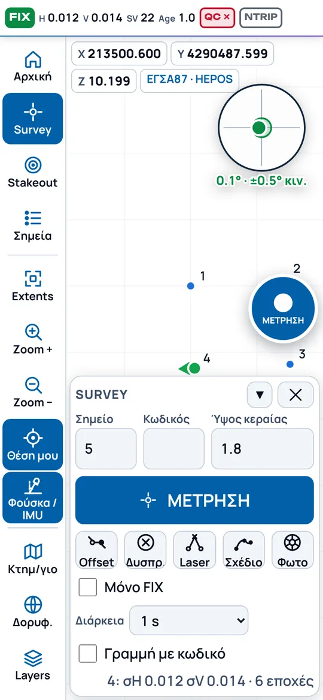
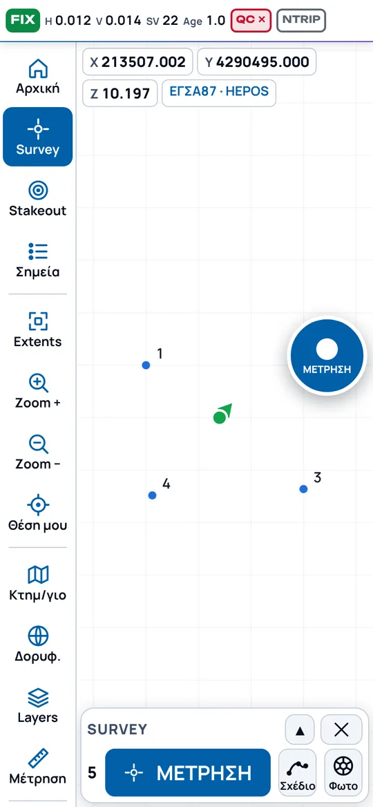
- Όνομα σημείου (αυξάνεται αυτόματα), κωδικός (πρόσφατοι κωδικοί ως κουμπιά), ύψος κεραίας (ράβδος + κέντρο φάσης).
- Διάρκεια: δευτερόλεπτα (1, 2, 3, 5, 10, 15, 30 s, 1 ή 3 λεπτά) ή εποχές· «Άλλο…» για οποιαδήποτε τιμή. Εποχή = μία λύση θέσης του δέκτη (στο 1 Hz, 1 εποχή ≈ 1 s). Γίνεται μέσος όρος όλων. Μόνο FIX: οι εποχές FLOAT απορρίπτονται.
- Αναμονή σε FIX (Ρυθμίσεις, προεπιλογή 10 s): η μέτρηση ξεκινά μόνο όταν η λύση μείνει FIX τόσα δευτερόλεπτα συνεχόμενα· το κουμπί δείχνει «⏳ FIX 4/10 s».
- Μόλις αποθηκευτεί το σημείο, το κουμπί γίνεται για λίγο πράσινο «✓ όνομα» (με ήχο) και μετά επανέρχεται, έτοιμο για την επόμενη μέτρηση.
- Ήχοι (Ρυθμίσεις → Ήχοι, με ένταση και δοκιμή): ήχος αποθήκευσης σημείου, ανεβαστικός ήχος όταν η λύση γίνεται FIX, χαμηλός ήχος και δόνηση όταν χάνεται το FIX.
- ● ΜΕΤΡΗΣΗ → εκτελείται ποιοτικός έλεγχος (ενότητα 6). Ξαναπάτημα κατά τη μέτρηση = ακύρωση.
- Γραμμή με κωδικό: διαδοχικά σημεία ίδιου κωδικού ενώνονται σε γραμμή (εξάγεται στο DXF).
- ⌖ Offset: σημείο από απόσταση + αζιμούθιο (χειροκίνητα ή από laser).
- Μέτρηση με όνομα που ήδη υπάρχει → σύγκριση ανεξάρτητων μετρήσεων και επιλογή «Αποθήκευση ως έλεγχος».
Συνεχής αποτύπωση
Αρχική → ⟳ Συνεχής αποτύπωση (ή εργαλείο ⟳ στη στήλη). Επιλέγεις ανά απόσταση (π.χ. κάθε 1 m) ή ανά χρόνο (π.χ. κάθε 2 s), κωδικό, «Μόνο σε FIX» και μέγιστο σH. Τα σημεία αποθηκεύονται αυτόματα καθώς περπατάς και τα ονόματα αυξάνουν μόνα τους. Πάνω στον χάρτη φαίνεται η μπάρα «⟳ Συνεχής · N σημεία» με το κουμπί ■ Διακοπή. Αν η λύση δεν είναι FIX ή το σH ξεπερνά το όριο, η μπάρα γράφει τον λόγο με κίτρινα γράμματα και δεν αποθηκεύεται σημείο.
Static
Αρχική → ◷ Static. Δίνεις σημείο, κωδικό, ύψος κεραίας και διάρκεια (5 λεπτά έως 2 ώρες, ή «Μέχρι να το σταματήσω»). Ο δέκτης μένει ακίνητος και η εφαρμογή:
- κρατά μία λύση ανά δευτερόλεπτο και υπολογίζει μέσο όρο, σH και σV. Χρησιμοποιεί μόνο λύσεις FIX όταν υπάρχουν. Αν δεν υπάρξει καθόλου FIX, το σημείο σημειώνεται «ΧΩΡΙΣ FIX».
- καταγράφει όλα τα δεδομένα του δέκτη στο αρχείο
Documents/HEXIS PAD/Static/<έργο>_<σημείο>_<ημερομηνία>.gnssγια μεταγενέστερη επεξεργασία. Για επεξεργασία στο γραφείο ο δέκτης πρέπει να στέλνει ακατέργαστες παρατηρήσεις (RTCM3 MSM ή τη μορφή του κατασκευαστή). - στο τέλος δείχνει το αποτέλεσμα και το κουμπί «Κοινή χρήση / email αρχείου».
Πατώντας ξανά ◷ όσο τρέχει, βλέπεις τα στατιστικά ζωντανά και μπορείς να τελειώσεις νωρίτερα.
Σχεδίαση γραμμής από σημείο σε σημείο
Στο Survey πάτα ✎ Σχέδιο και στην ομάδα Draw lines διάλεξε Line (ανεξάρτητα ευθύγραμμα τμήματα), Polyline (συνεχής γραμμή), Spline (ομαλή καμπύλη μέσα από τα σημεία) ή Polygon (κλειστό πολύγωνο). Κάθε κουμπί έχει εικονίδιο που δείχνει το σχήμα. Από εκεί και πέρα κάθε σημείο που μετράς μπαίνει στη γραμμή — στον χάρτη φαίνεται πάνω από τον χάρτη μια πράσινη μπάρα με τον τύπο και το πλήθος σημείων. Μπορείς να ξεκινήσεις από το τελευταίο μετρημένο σημείο. Στη μπάρα: ↶ βγάζει το τελευταίο σημείο από τη γραμμή (το σημείο μένει), ✕ ακυρώνει τη γραμμή (όλα τα σημεία μένουν), ✓ Τέλος την ολοκληρώνει. Στην εξαγωγή DXF οι γραμμές βγαίνουν ως LINE / POLYLINE / πυκνή polyline για spline, σε επίπεδο HP_<κωδικός>.
Ύψος κεραίας = κοντάρι + offset δέκτη
Στο πεδίο του Survey γράφεις μόνο το ύψος του κονταριού. Το offset της κεραίας (από το σημείο αναφοράς ARP έως το κέντρο φάσης, π.χ. 0.068 m για Singular X1 Lite / L1) προστίθεται μόνο του όταν ο δέκτης έχει αναγνωριστεί, ή το ορίζεις στις Ρυθμίσεις → «Offset κεραίας δέκτη». Η ετικέτα του πεδίου δείχνει «Κοντάρι (+0.068)» και στις ιδιότητες του σημείου καταγράφονται και τα δύο.
Σφάλμα θέσης χωρίς GST
Αν ο δέκτης δεν στέλνει GST (π.χ. Singular μέσω Wi-Fi), το σH/σV εμφανίζεται με ~ (εκτίμηση από HDOP και τύπο λύσης: FIX ≈ 1.2 cm × HDOP). Στον έλεγχο QC μετρά ως «προειδοποίηση», όχι απόρριψη· η πραγματική διασπορά των εποχών της μέτρησης ελέγχεται κανονικά.
Δυσπρόσιτο σημείο μέσα στην αποτύπωση
Στην κάρτα Survey υπάρχει κουμπί ✕ Δυσπρ., δίπλα στο Offset. Δεν χρειάζεται να βγεις από την αποτύπωση:
- Πάτα ✕ Δυσπρ. Ανοίγει το σχήμα με τα 4 σημεία.
- Πάτα «● Μέτρηση σημείου 1» (ή πες «Πάρε»). Μετά 2, 3, 4. Το κουμπί περνά μόνο του στο επόμενο.
- Βλέπεις το αποτέλεσμα, τη γωνία των ευθειών και προειδοποίηση αν η γεωμετρία είναι αδύναμη.
- Πάτα 💾 Αποθήκευση στην αποτύπωση. Το σημείο παίρνει τον επόμενο αριθμό της αποτύπωσης και τον τρέχοντα κωδικό. Μπαίνει στη γραμμή (αν μετράς «Γραμμή με κωδικό») και η αρίθμηση συνεχίζει κανονικά.
Με την επιλογή «Κράτα και τα βοηθητικά σημεία στη λίστα» αποφασίζεις αν τα 4 βοηθητικά σημεία μένουν στη λίστα ή σβήνονται. Στην πάνω επιλογή υπάρχουν και οι άλλες μέθοδοι: απόσταση + αζιμούθιο με laser, τομή αποστάσεων, προέκταση ευθείας.
Σημείο με αποστασιόμετρο laser (DISTO κ.λπ.) από 2–3 θέσεις
Για σημεία όπου δεν φτάνει το κοντάρι: γωνία κτιρίου, κολόνα, δέντρο, φρεάτιο πίσω από φράχτη. Κουμπί ⟟ Laser στην κάρτα Survey.
- Σύνδεσε το laser με «λειτουργία πληκτρολογίου» Bluetooth (στο DISTO: Bluetooth → Keyboard mode) και κάνε σύζευξη στο Android.
- Στάσου στη θέση 1 και πάτα «● Θέση 1: μέτρηση GNSS» (ή πες «Πάρε»).
- Ακούμπα το laser στον στυλεό, σημάδεψε το σημείο και πάτα μέτρηση στο laser. Η απόσταση γράφεται μόνη της στο πεδίο. Αν δεν έχεις σύνδεση, τη γράφεις.
- Πήγαινε στη θέση 2, σε απόσταση λίγων μέτρων, ώστε οι δύο θέσεις να σχηματίζουν με το σημείο γωνία 60°–120°. Κάνε ξανά μέτρηση GNSS και απόσταση.
- Υπάρχουν δύο πιθανές λύσεις. Διάλεξε Αριστερά / Δεξιά (κοιτάζοντας από τη θέση 1 προς τη 2), ή πρόσθεσε 3η θέση: η εφαρμογή διαλέγει μόνη της και δείχνει υπόλοιπο (RMS) για έλεγχο.
- 💾 Αποθήκευση στην αποτύπωση: το σημείο παίρνει τον επόμενο αριθμό και τον κωδικό σου.
Στη «Διόρθωση απόστασης» βάζεις π.χ. την ακτίνα του κονταριού, αν μετράς από την πλάτη του laser ακουμπισμένου στο κοντάρι. Για υψόμετρο, διάλεξε «Μέσο Z θέσεων + ΔΗ». Η εφαρμογή προειδοποιεί όταν η γεωμετρία είναι αδύναμη ή οι αποστάσεις δεν «κλείνουν». Το ίδιο υπάρχει και στο COGO → Σημείο με laser και στο Δυσπρόσιτο.
Κλίση ↔ απόλυτη κέντρωση
Με ενεργό IMU, στην κάρτα Survey υπάρχει το κουμπί ∠ Κλίση 60°. Αν το πατήσεις, γίνεται ⊙ Κέντρωση. Το ίδιο κάνει το πάτημα στην ένδειξη ∠ της γραμμής κατάστασης, ή οι φωνητικές εντολές «Κέντρωση» / «Κλίση».
- ∠ Κλίση: μετράς με γερμένο κοντάρι, μέχρι το όριο του δέκτη.
- ⊙ Κέντρωση: σημείο μόνο με κατακόρυφο κοντάρι, μέσα στην ανοχή κέντρωσης (π.χ. ±0.5°). Χρησιμεύει για τριγωνομετρικά, σημεία ελέγχου και βάσεις. Αν βγεις εκτός, το κουμπί γράφει «⏳ Εκτός κέντρωσης» και περιμένει.
- Κάθε σημείο κρατά με ποιον τρόπο μετρήθηκε και με πόση κλίση.
IMU — μέτρηση με κεκλιμένο κοντάρι
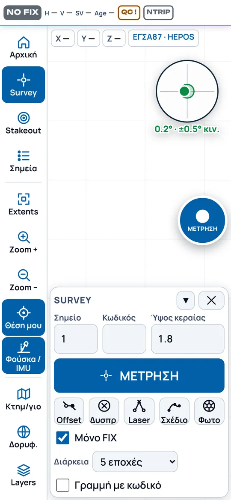
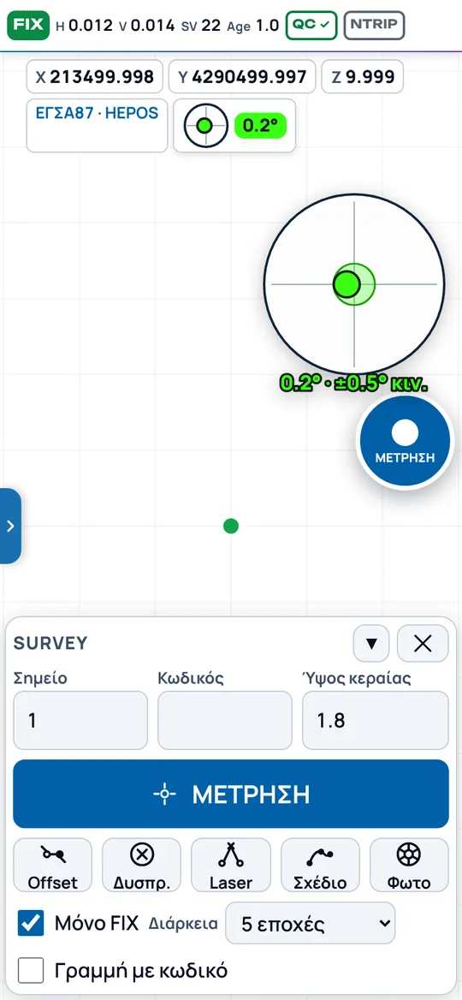
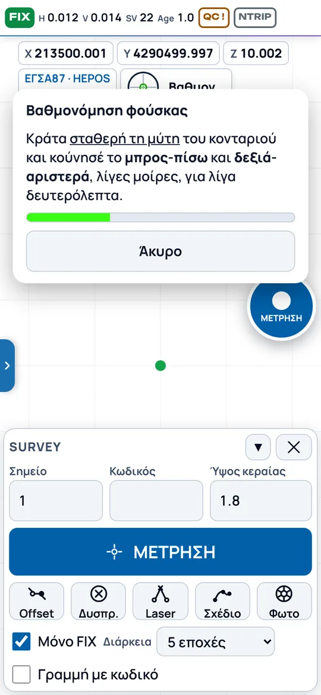
Αν ο δέκτης σου έχει IMU, μετράς χωρίς να αλφαδιάζεις. Η αντιστάθμιση γίνεται μέσα στον δέκτη και η εφαρμογή φροντίζει να μη μετρήσεις έξω από τα όρια του κατασκευαστή.
- Αυτόματη αναγνώριση: η εφαρμογή καταλαβαίνει μόνη της από τα δεδομένα που στέλνει ο δέκτης:
- Αν ο δέκτης στέλνει κατάσταση αντιστάθμισης κλίσης, το IMU ενεργοποιείται αμέσως και σου λέει, και φωναχτά, μέχρι πόσες μοίρες επιτρέπεται.
- Αν στέλνει μόνο γωνία κλίσης (που μπορεί να είναι και απλή ηλεκτρονική φούσκα), σε ρωτά μία φορά αν ο δέκτης έχει IMU, και γράφεις τη μέγιστη κλίση από το φυλλάδιό του. Αν απαντήσεις «Όχι», μένει μόνο η φούσκα κέντρωσης.
- Αν το μοντέλο είναι γνωστό στην εφαρμογή (π.χ. Emlid Reach RS3: 60°, CHC i73: 45°), μπαίνει το όριο του κατασκευαστή. Αλλιώς μπαίνουν 30°, όσο δεν βάλεις εσύ το όριο του φυλλαδίου.
- Όλα αλλάζουν από Μενού → IMU / φούσκα κέντρωσης.
- Ένδειξη: στη γραμμή κατάστασης φαίνεται ∠ 12°/60°, πράσινο μέσα στο όριο και κόκκινο έξω από αυτό. Αν γράφει ∠ INIT, το IMU θέλει αρχικοποίηση: κούνα το κοντάρι ή περπάτα, όπως ορίζει ο κατασκευαστής.
- Προστασία: πάνω από το όριο, ή πριν ολοκληρωθεί η αρχικοποίηση, η μέτρηση δεν παίρνει σημείο. Το κουμπί γράφει «⏳ Κλίση 65° > 60°» και ακούγεται προειδοποίηση. Μόλις μπεις στο όριο, η μέτρηση γίνεται μόνη της. Το ίδιο ισχύει στη χάραξη, στο δυσπρόσιτο και στη συνεχή αποτύπωση.
- Ψηφιακή φούσκα κέντρωσης: μικρή, δίπλα στις συντεταγμένες, ώστε να μην κρύβει τον χώρο αποτύπωσης (με τη στήλη μόνιμα ανοιχτή, βρίσκεται στο κουμπί «Φούσκα / IMU» της στήλης). Η κουκκίδα δείχνει προς τα πού γέρνει το κοντάρι και δίπλα γράφονται οι μοίρες. Fluo πράσινη = κατακόρυφο, πορτοκαλί = κοντά, κόκκινη = εκτός. Με ένα πάτημα εμφανίζεται μεγάλη πάνω στον χάρτη για ακριβή κέντρωση (τη σύρεις όπου θέλεις), και με ξανά πάτημα κρύβεται. Παρατεταμένο πάτημα: ρυθμίσεις φούσκας / IMU. Με IMU ο κόκκινος διακεκομμένος κύκλος είναι το όριο κλίσης του δέκτη.
- Χωρίς IMU (δέκτης με ηλεκτρονική φούσκα): η φούσκα δείχνει την ανοχή κατακορύφου, π.χ. «0.4° · ±0.5°». Πράσινη = κεντραρισμένο, πορτοκαλί = κοντά, κόκκινη = εκτός. Με την επιλογή «να μην παίρνει σημείο εκτός ανοχής κέντρωσης», η μέτρηση περιμένει μέχρι να κεντράρεις.
- Η φούσκα φαίνεται πάντα. Όταν ο δέκτης στέλνει κλίση, η φούσκα δείχνει από τον δέκτη και δεν χρειάζεται καμία βαθμονόμηση. Αλλιώς δείχνει από τον αισθητήρα του κινητού, με την ένδειξη «κιν.», αν το κινητό ή το tablet είναι στη βάση του κονταριού.
- Βαθμονόμηση κινητού — αυτόματη, μόνο όταν χρειάζεται: αν ο δέκτης δεν στέλνει κλίση και το κινητό δεν έχει βαθμονομηθεί, εμφανίζεται μόνο του το μήνυμα: κράτα σταθερή τη μύτη του κονταριού και κούνησέ το μπρος-πίσω και δεξιά-αριστερά, λίγες μοίρες, για περίπου 10″. Η μπάρα γεμίζει και η φούσκα βαθμονομείται μόνη της, χωρίς αλφάδι και χωρίς κουμπιά. Ξαναγίνεται μόνο αν αλλάξεις θέση στο κινητό πάνω στη βάση: πάτημα στη φούσκα όταν γράφει «Βαθμον.», ή από τις ρυθμίσεις φούσκας.
- Δικό σου όριο: μπορείς να βάλεις μικρότερο όριο από του κατασκευαστή, π.χ. 30° για μεγαλύτερη ακρίβεια.
- Ύψος: όταν ο δέκτης δίνει τη θέση στη μύτη του κονταριού, το ύψος κονταριού ρυθμίζεται στον δέκτη και η εφαρμογή δεν το αφαιρεί ξανά. Η επιλογή είναι ενεργή από προεπιλογή.
- Καταγραφή: κάθε σημείο κρατά τη μέγιστη κλίση της μέτρησης και το μοντέλο του δέκτη.
- Η εφαρμογή ελέγχει τη γωνία όταν ο δέκτης τη στέλνει (μηνύματα PASHR, PSAT HPR, PTNL AVR, HPD ή κατάσταση κλίσης Unicore). Αν ο δέκτης δεν στέλνει γωνία, γράφει «∠ IMU» και τηρείς εσύ το όριο του κατασκευαστή.
- Πριν από τη δουλειά, μέτρα ένα γνωστό σημείο με κεκλιμένο κοντάρι. Έτσι επιβεβαιώνεις ύψος κονταριού και αρχικοποίηση.
Πλωτό κουμπί μέτρησης
Πάνω στον χάρτη υπάρχει στρογγυλό κουμπί ● ΜΕΤΡΗΣΗ. Στη χάραξη γίνεται μωβ και γράφει ΚΑΤΑΓΡΑΦΗ.
- Πάτημα = μέτρηση, ακριβώς όπως το μεγάλο κουμπί. Όσο μετράει γίνεται πορτοκαλί (■) και μόλις αποθηκευτεί το σημείο πράσινο (✓).
- Σύρσιμο = το μετακινείς όπου βολεύει το χέρι σου και θυμάται τη θέση. Όταν το σέρνεις δεν παίρνει μέτρηση.
- Ρυθμίσεις → Πλωτό κουμπί μέτρησης: «✋ Αριστερόχειρας» / «Δεξιόχειρας ✋» το στέλνει στην αντίστοιχη πλευρά. Υπάρχει επιλογή «Μεγάλο κουμπί» για γάντια, και μπορείς και να το απενεργοποιήσεις.
- Αν η κάρτα Survey ή Stakeout ανοίξει από κάτω του, το κουμπί ανεβαίνει αυτόματα πάνω από αυτήν.
Κλήσεις και λειτουργία στο παρασκήνιο
Όσο είναι συνδεδεμένος δέκτης ή τρέχει NTRIP ή static, η εφαρμογή δουλεύει με προτεραιότητα και στο παρασκήνιο. Αν χτυπήσει το τηλέφωνο, ή ανοίξεις άλλη εφαρμογή ή σβήσει η οθόνη, τίποτα δεν σταματά:
- Η σύνδεση με τον δέκτη, οι διορθώσεις NTRIP, η συνεχής αποτύπωση και η καταγραφή static συνεχίζουν κανονικά.
- Στις ειδοποιήσεις φαίνεται «HEXIS PAD — Δέκτης συνδεδεμένος · NTRIP». Πατώντας την, επιστρέφεις στην εφαρμογή. Την πρώτη φορά το Android ζητά άδεια για ειδοποιήσεις: πάτα Να επιτρέπεται.
- Μέσα σε κλήση η εφαρμογή δεν μιλάει (φωνητική επιβεβαίωση), και το μικρόφωνο των φωνητικών εντολών κλείνει μέχρι να επιστρέψεις.
- Αν χαθεί το Bluetooth την ώρα της κλήσης, η επανασύνδεση γίνεται μόνη της, και στο παρασκήνιο.
- Η ειδοποίηση φεύγει όταν αποσυνδέσεις τον δέκτη και σταματήσεις το NTRIP.
Σε κάποια κινητά (Xiaomi, Huawei, Samsung με «εξοικονόμηση μπαταρίας») βάλε στις ρυθμίσεις μπαταρίας του Android το HEXIS PAD στο «Χωρίς περιορισμούς».
Φωνητικές εντολές
Εργαλείο 🎙 Φωνή, ή Αρχική → Φωνητικές εντολές, ή Ρυθμίσεις → Φωνητικές εντολές. Όσο ακούει, πάνω στον χάρτη φαίνεται πράσινη ένδειξη «🎙 Ακούω…». Αν την πατήσεις, απενεργοποιείται.
- «Πάρε» (ή «Μέτρα», «Καταγραφή»): μέτρηση σημείου. Στη χάραξη κάνει καταγραφή του Pn.
- «Σβήσε»: διαγράφει το τελευταίο μετρημένο σημείο. Ο επόμενος αριθμός ξαναπαίρνει το όνομά του.
- «Αναίρεση»: επαναφέρει το σημείο που σβήστηκε, μέσα σε 15 s. Υπάρχει και κίτρινο κουμπί «↶ Αναίρεση» στην οθόνη.
- «Επόμενο» / «Προηγούμενο»: σημείο χάραξης.
- «Άκυρο» / «Σταμάτα»: διακοπή μέτρησης ή συνεχούς αποτύπωσης.
Η εφαρμογή επιβεβαιώνει φωναχτά («Αποθηκεύτηκε P12»). Την πρώτη φορά ζητά άδεια μικροφώνου. Η αναγνώριση γίνεται από την υπηρεσία φωνής του κινητού. Αν έχεις κατεβάσει τα ελληνικά για χρήση χωρίς σύνδεση (Ρυθμίσεις Android → Αναγνώριση ομιλίας), δουλεύει και χωρίς internet. Το εργαλείο ⌫ Σβήσε τελευταίο κάνει το ίδιο με το «Σβήσε» με ένα πάτημα.
6. Συνεχής ποιοτικός έλεγχος RTK (QC)
Βασίζεται στις οδηγίες της NOAA/NGS για RTK (κλάσεις RT1–RT4) και στη λογική του ISO 17123-8. Ελέγχεται κάθε εποχή και κάθε μέτρηση.
| Κλάση | Ακρίβεια 95% (Ο/Κ) | PDOP | Δορυφ. | σ (1σ) | Εποχές |
|---|---|---|---|---|---|
| RT1 · δίκτυο / στάσεις | 2 / 4 cm | ≤ 2 | ≥ 7 | 1 cm | 180 |
| RT2 · τοπογραφικό ακριβείας | 4 / 5 cm | ≤ 3 | ≥ 6 | 1.5 cm | 12 |
| RT3 · τοπογραφικό / χάραξη | 6 / 8 cm | ≤ 4 | ≥ 5 | 3 cm | 15 |
| RT4 · γρήγορη αποτύπωση / GIS | 20 / 30 cm | ≤ 6 | ≥ 5 | 5 cm | 10 |
- Ζωντανά: λύση FIX, χρόνος σε FIX, σH/σV, PDOP, δορυφόροι, ηλικία διορθώσεων, ανίχνευση άλματος (απότομη μετακίνηση σε FIX με ακίνητη ράβδο — πιθανή λάθος επίλυση· ο χρόνος FIX μηδενίζει).
- Ανά μέτρηση: διασπορά εποχών (std), μέγιστη απόκλιση, χειρότερο σH/PDOP, ελάχιστοι δορυφόροι, άλματα, μη-FIX εποχές. Αποτέλεσμα: ΕΝΤΑΞΕΙ / ΠΡΟΣΟΧΗ / ΑΠΟΡΡΙΨΗ — αποθηκεύεται σε κάθε σημείο και στο CSV.
- Μέτρηση ελέγχου σε γνωστό σημείο: Σημεία → σημείο → ✓ Μέτρηση ελέγχου. Σύγκριση με την ανοχή της κλάσης.
7. Χάραξη (Stakeout)
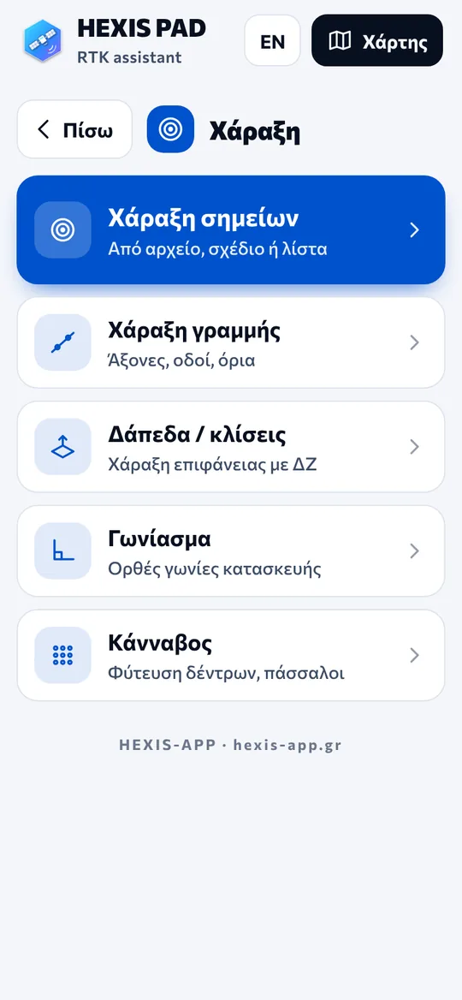
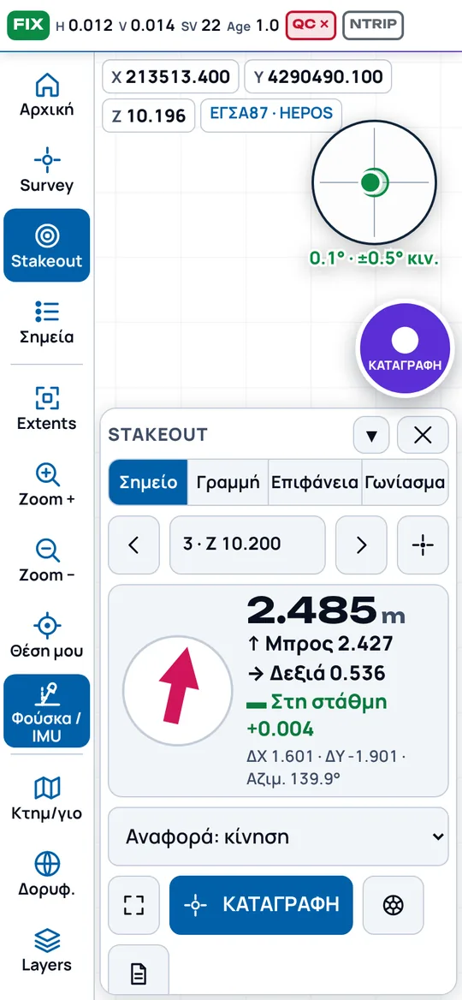
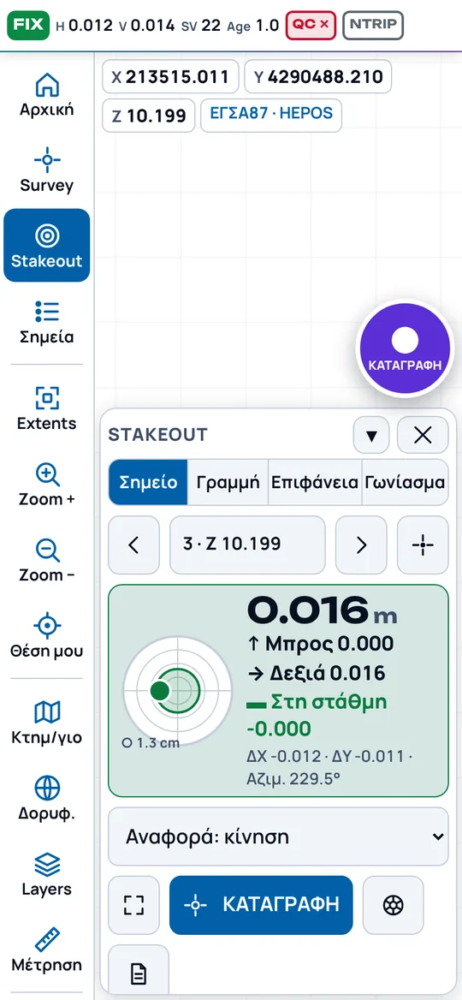
Σημείο
Στόχος από τη λίστα, με ◀ ▶ (επόμενο/προηγούμενο), ή ⌖ στον χάρτη (σημεία, κορυφές DXF/DWG). Ο κύκλος-στόχος δείχνει βέλος όταν είσαι μακριά και δακτυλίους με κλίμακα κοντά. Πράσινο = εντός ανοχής, με ήχο και δόνηση.
Αναφορά κατεύθυνσης: «Αναφορά: κίνηση» (Μπρος/Πίσω, Δεξιά/Αριστερά ως προς το πού περπατάς), «Αναφορά: Βορράς» (ΔX/ΔY), ή «Αναφορά: σημείο» (προσανατολισμός προς σημείο, π.χ. κοιτάζοντας προς πάσσαλο). Εκσκαφή / Επίχωση = σχεδιαστικό Z − έδαφος.
Γραμμή
Πολυγραμμή σχεδίου (και τόξα), δύο σημεία, ή μετρημένη γραμμή. Κενή Χ.Θ. = ζωντανή χιλιομέτρηση και κάθετη απόσταση. Με Χ.Θ. + Offset = στόχος· ▶ προχωρά κατά το «Βήμα».
Επιφάνεια (δάπεδα, κλίσεις)
Από COGO → Κλίση δαπέδου: σημείο αναφοράς + κύρια/εγκάρσια κλίση %, επίπεδο από 3 σημεία, ή οριζόντιο. Δείχνει ζωντανά σχεδιαστικό Z και Εκσκαφή/Επίχωση.
Γωνίασμα
Βασική γραμμή Α→Β: Χ.Θ. από το Α και κάθετη απόσταση (+δεξιά). Δημιουργία 4 γωνιών ορθογωνίου με διαγωνίους ελέγχου.
⛶ πλήρης οθόνη χάραξης με μεγάλα ψηφία. ● ΚΑΤΑΓΡΑΦΗ: μετρά και αποθηκεύει το χαραγμένο σημείο με το όνομα του στόχου και «n» (π.χ. P1 → P1n), με ΔX/ΔY/ΔZ από τον στόχο, χωρίς να βγεις από τη χάραξη· μετά πάει αυτόματα στο επόμενο. 📄 Αρχείο επιβεβαίωσης χάραξης: CSV και TXT με στόχους, χαραγμένα, αποκλίσεις και ένδειξη εντός/εκτός ανοχής — αποθήκευση, κοινή χρήση ή email. Ανοχές: Ρυθμίσεις.
8. COGO
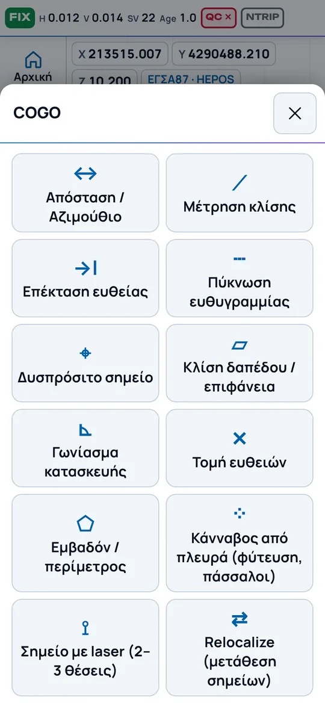
| Εργαλείο | Χρήση |
|---|---|
| Απόσταση / Αζιμούθιο | Οριζ./κεκλιμένη απόσταση, αζιμούθιο (μοίρες & grad), ΔX ΔY ΔZ, κλίση. |
| Μέτρηση κλίσης | Από σημείο Α προς ζωντανή θέση ή σημείο Β: %, ‰, μοίρες, 1:n. |
| Επέκταση ευθείας | Σημείο σε απόσταση μετά το Β (ή πριν το Α) με πλευρική απόσταση. |
| Πύκνωση ευθυγραμμίας | Σημεία χάραξης ανά βήμα πάνω σε Α→Β ή γραμμή σχεδίου, με offset. |
| Δυσπρόσιτο σημείο | Δύο σημεία πριν + δύο μετά: μετράς 1, 2 πάνω στην ευθεία πριν το σημείο και 3, 4 πάνω στην ευθεία μετά (το κουμπί σε οδηγεί βήμα-βήμα και περνά μόνο του στο επόμενο). Η τομή των δύο ευθειών δίνει το σημείο, με γωνία ευθειών, απόσταση από 2 και 3, διαφορά Z και προειδοποίηση για αδύναμη γεωμετρία. Επίσης: απόσταση + αζιμούθιο (laser, με μαγνητική απόκλιση και σύγκλιση μεσημβρινών), τομή δύο αποστάσεων, προέκταση ευθείας, τομή ευθειών (γωνία κτιρίου). |
| Κλίση δαπέδου / επιφάνεια | Ορισμός σχεδιαστικής επιφάνειας για χάραξη υψομέτρων. |
| Γωνίασμα κατασκευής | Έλεγχος ορθής γωνίας (″ και mm), χάραξη από βασική, γωνίες ορθογωνίου. |
| Εμβαδόν / περίμετρος | Από σημεία με σειρά (m² και στρέμματα). |
| Τοπική προσαρμογή | Μετασχηματισμός 4 παραμέτρων + μετάθεση Z σε γνωστά σημεία τοπικού δικτύου, με υπόλοιπα. |
Σε κάθε πεδίο σημείου: γράψε όνομα, ☰ λίστα, 📍 τρέχουσα θέση, ● μέτρηση τώρα. Αποτελέσματα: 💾 αποθήκευση ή ◎ χάραξη.
Κάνναβος από πλευρά πολυγώνου (φύτευση δέντρων, πάσσαλοι)
COGO → ⁘ Κάνναβος, ή το εργαλείο ⁘ στη στήλη.
- Πολύγωνο: μια μετρημένη γραμμή (π.χ. το όριο που μέτρησες με κωδικό ΟΡΙΟ), μια κλειστή πολυγραμμή από το σχέδιο DXF/DWG, ή κορυφές που διαλέγεις με τη σειρά.
- Πλευρά βάσης: οι σειρές γίνονται παράλληλες σε αυτήν (offset). Από προεπιλογή είναι η μεγαλύτερη πλευρά και στον χάρτη φαίνεται κόκκινη.
- Αποστάσεις: στη σειρά (π.χ. 5 m) και ανάμεσα στις σειρές (π.χ. 5 m). Ορίζεις επίσης το offset της 1ης σειράς από την πλευρά βάσης και την ελάχιστη απόσταση από όλα τα όρια.
- Μοτίβο: τετράγωνο ή ρομβοειδές (κλιμακωτό, κάθε δεύτερη σειρά μετατοπισμένη κατά μισό βήμα). Με την επιλογή «Κεντράρισμα» κάθε σειρά έχει ίσα περιθώρια δεξιά και αριστερά.
- Η προεπισκόπηση φαίνεται ζωντανά στον χάρτη (πράσινα σημεία), μαζί με τον αριθμό σημείων και σειρών.
- ✓ Δημιουργία σημείων χάραξης: τα σημεία παίρνουν όνομα Δ1, Δ2… και κωδικό ΔΕΝΤΡΟ, που αλλάζουν. Η αρίθμηση είναι φιδωτή (πάει-έρχεται), ώστε το «Επόμενο» να σε πηγαίνει πάντα στο διπλανό σημείο. Η χάραξη ανοίγει αμέσως στο Δ1.
Relocalize — μετάθεση σημείων σε γνωστά σημεία
Για σημεία που μετρήθηκαν με ψευδές FIX ή με λάθος βάση και βγήκαν όλα μετατοπισμένα. Υπολογισμοί → Relocalize (ή εργαλείο ⇄).
- Ποια σημεία μετακινούνται: όλα, όσα μετρήθηκαν μια συγκεκριμένη ημέρα, ή από το σημείο Α μέχρι το Β. Τα γνωστά και τριγωνομετρικά σημεία δεν αλλάζουν ποτέ.
- Γνωστά σημεία: «＋ Προσθήκη γνωστού σημείου» → διάλεξε το μετρημένο σημείο, που έχει τη λάθος θέση. Μετά δώσε τις σωστές συντεταγμένες, είτε από γνωστό σημείο της λίστας είτε γράφοντάς τες.
- 1 γνωστό σημείο: μόνο μετάθεση ΔX, ΔY, ΔZ. 2: μετάθεση και στροφή. 3 ή περισσότερα: και έλεγχος υπολοίπων (RMS), και προαιρετικά κλίμακα.
- Βλέπεις ΔX, ΔY, ΔZ, στροφή και υπόλοιπα, και πατάς Εφαρμογή. Όλα τα σημεία πέφτουν στη σωστή θέση και η σημείωση κάθε σημείου γράφει τη διόρθωση.
- ↶ Αναίρεση τελευταίου relocalize: τα σημεία επανέρχονται ακριβώς όπως ήταν. Κρατούνται οι τελευταίες 10 διορθώσεις.
9. Συστήματα συντεταγμένων
ΕΓΣΑ87 — επίσημο μοντέλο HEPOS (προεπιλογή): ο μετασχηματισμός HTRS07 → ΕΓΣΑ87 του Κτηματολογίου (7 παράμετροι + κάνναβοι διορθώσεων δΕ/δΝ 2 km, διγραμμική παρεμβολή), ενσωματωμένος στην εφαρμογή — δεν χρειάζεται κανένα αρχείο. Ελέγχθηκε με τα επίσημα παραδείγματα του Κτηματολογίου με απόκλιση κάτω από 1 mm. Χρησιμοποίησέ το με HEPOS και με δίκτυα που δίνουν ETRS89. Για το Καστελόριζο εφαρμόζεται το ειδικό μοντέλο του (3 μεταθέσεις, ΤΜ87 με λ0 = 27°).
Άλλες χώρες: η εφαρμογή διαλέγει μόνη της σύστημα και γεωειδές από τη θέση — δες Εργασία στο εξωτερικό. Μπορείς επίσης να βάλεις δικό σου ορισμό proj4 για οποιαδήποτε χώρα. Υψόμετρα: ορθομετρικά του δέκτη ή ελλειψοειδή. Για τοπικά δίκτυα: COGO → Τοπική προσαρμογή.
Εργασία στο εξωτερικό
Η εφαρμογή βρίσκει μόνη της σε ποια χώρα είσαι από τη θέση του δέκτη και βάζει το επίσημο σύστημα συντεταγμένων της χώρας, το εθνικό μοντέλο γεωειδούς για τα υψόμετρα (όπου διατίθεται ελεύθερα) και τη λίστα με τα δίκτυα μόνιμων σταθμών της χώρας (το αντίστοιχο του HEPOS) στο NTRIP.
- Ελλάδα: όλα μένουν όπως είναι — ΕΓΣΑ87 / HEPOS, Κτηματολόγιο και ΚΑΕΚ — όποια γλώσσα κι αν έχεις διαλέξει. Η γλώσσα δεν αλλάζει ποτέ σύστημα ή υπόβαθρα.
- Εκτός Ελλάδας: το Κτηματολόγιο και οι ΚΑΕΚ δεν εμφανίζονται (ούτε στη στήλη ούτε στα υπόβαθρα).
- Αλλαγή αυτόματα μόνο σε κενό έργο. Αν το έργο έχει ήδη σημεία, η εφαρμογή ρωτά μία φορά: κράτα το τωρινό σύστημα, άλλαξε, ή ξεκίνα νέο έργο στη νέα χώρα. Ποτέ δεν αλλάζει σύστημα στη μέση της δουλειάς.
- Γεωειδές: κατεβαίνει την πρώτη φορά (θέλει ίντερνετ) και μένει στη συσκευή για δουλειά χωρίς ίντερνετ. Τα ορθομετρικά υψόμετρα υπολογίζονται H = h − N από το ελλειψοειδές ύψος του δέκτη. Όπου δεν υπάρχει εθνικό μοντέλο, τα υψόμετρα έρχονται από τον δέκτη.
- Χειροκίνητα: Δέκτης & RTK → Σύστημα συντεταγμένων. Εκεί φαίνονται η χώρα εργασίας και το γεωειδές, μπορείς να κλείσεις την αυτόματη επιλογή, να πατήσεις «Εφαρμογή για τη θέση μου» ή να διαλέξεις άλλο σύστημα / δικό σου proj4.
| Χώρα | Σύστημα | Γεωειδές | Δίκτυα NTRIP |
|---|---|---|---|
| Κύπρος | CGRS93 / LTM | δέκτη | CYPOS |
| Ισπανία | ETRS89 / UTM 29–31 (Κανάρια: REGCAN95 / UTM 27–28) | EGM08-REDNAP (IGN) | ERGNSS (IGN), περιφερειακά |
| Γαλλία | RGF93 / Lambert-93 | RAF20 (IGN) | Teria, Orphéon, Sat-Info |
| Γερμανία / Αυστρία | ETRS89 / UTM 32–33 | GCG2016 (BKG) για Γερμανία | SAPOS · APOS, EPOSA |
| Ιταλία | RDN2008 / UTM 32–34 | δέκτη | NetGEO, ItalPoS, περιφερειακά |
| Πολωνία | PL-2000 ζώνες 5–8 | PL-geoid2021 (GUGiK) | ASG-EUPOS, TPI NET PRO |
| Ην. Βασίλειο | British National Grid | OSGM15 | OS Net, SmartNet |
| Ολλανδία | RD New | NLGEO2018 | NETPOS, 06-GPS |
| Ιαπωνία | JGD2011 επίπεδο ορθογώνιο σύστημα (19 ζώνες) | GSIGEO2011 | Jenoba, ichimill |
| Κορέα / Κίνα / Ρωσία | Korea 2000 ζώνες · CGCS2000 3° · ΓΣΚ-2011 | δέκτη | NGII · Qianxun · EFT-CORS |
| Ισραήλ / Σαουδική Αραβία | Israeli TM Grid · KSA-GRF17 / UTM | δέκτη | APN · SACORS |
| Άλλες χώρες | WGS84 / UTM αυτόματης ζώνης | δέκτη | SmartNet, VRS Now |
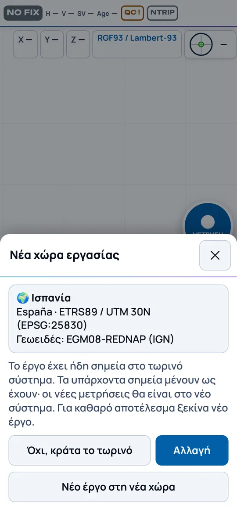
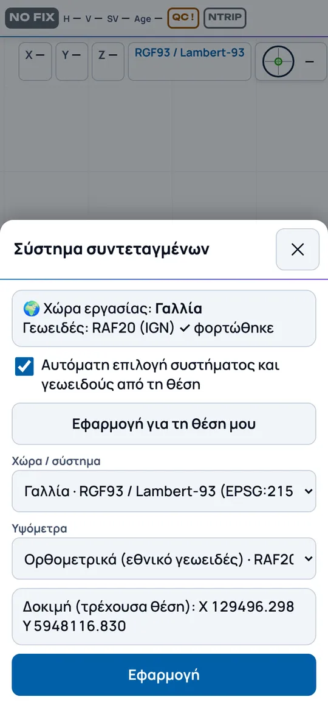
10. Χάρτης & υπόβαθρα
Στη στήλη: ▦ Κτημ/γιο ανάβει/σβήνει τα όρια γεωτεμαχίων και τους ΚΑΕΚ πάνω στον λευκό χάρτη, ◐ Δορυφ. εναλλάσσει λευκό/δορυφορικό. ≣ → υπόβαθρο: Esri δορυφορική / οδικός / τοπογραφικός, OpenStreetMap, Google (με δικό σου Map Tiles API key στις Ρυθμίσεις). Επικαλύψεις: ονόματα Esri, Κτηματολόγιο (όρια γεωτεμαχίων WMS), HEXIS ΚΑΕΚ (όρια και αριθμοί ΚΑΕΚ). Επίσης ορατότητα layers του DXF/DWG.
Πάτημα σε σημείο στον χάρτη = Χάραξη, ✎ Ιδιότητες (όνομα, κωδικός, X/Y/Z, τύπος, σημείωση), ℹ λεπτομέρειες, 🗑 Διαγραφή. Πάτημα σε κορυφή/γραμμή σχεδίου = Χάραξη ή νέο σημείο. Διπλό πάτημα = μεγέθυνση. 📏 = μέτρηση μήκους/εμβαδού στον χάρτη. ◎ = ακολουθεί τη θέση. ⤢ = όλα στην οθόνη.
11. Αρχεία & email
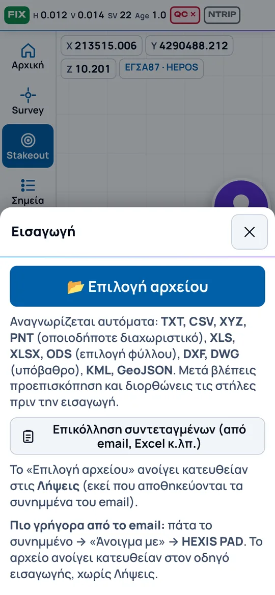
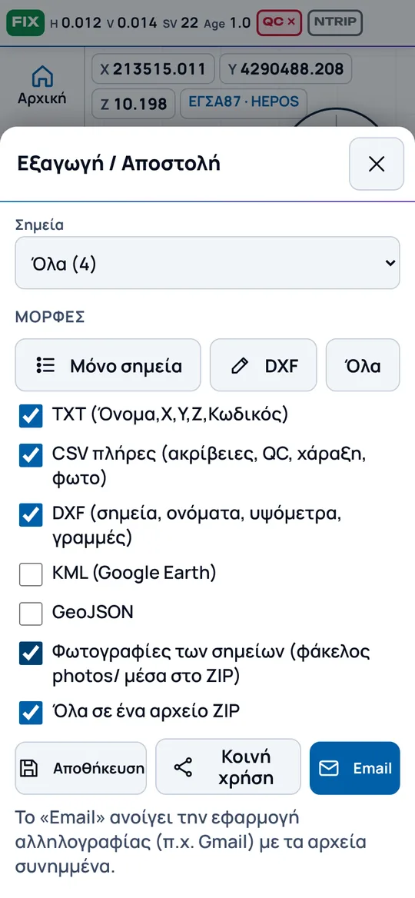
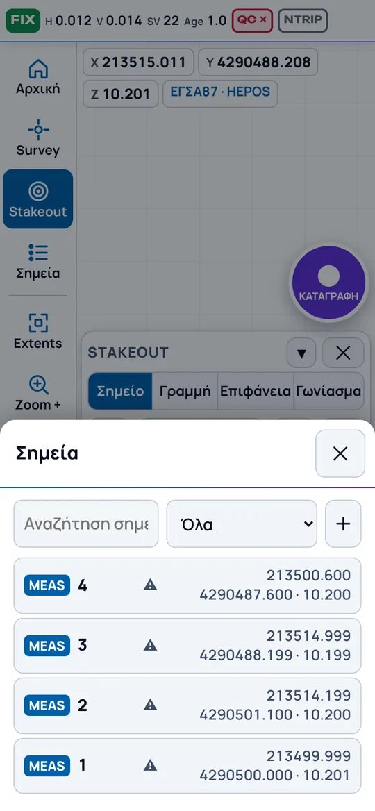
Εισαγωγή
Από email: πάτα το συνημμένο → «Άνοιγμα με» → HEXIS PAD. Ανοίγει κατευθείαν ο οδηγός εισαγωγής. Αν το έχεις ήδη κατεβάσει: Εισαγωγή → «Επιλογή αρχείου». Το παράθυρο ανοίγει κατευθείαν στις Λήψεις.
Ένα κουμπί «Επιλογή αρχείου» — ο τύπος αναγνωρίζεται αυτόματα:
- TXT, CSV, XYZ, PNT, DAT: οποιοδήποτε διαχωριστικό (κόμμα, ερωτηματικό, tab, κενά), δεκαδικό κόμμα ή τελεία, ελληνική κωδικοποίηση.
- XLS, XLSX, ODS: επιλογή φύλλου.
- DXF, DWG: υπόβαθρο σχεδίου, με προαιρετική μετάθεση ΔX/ΔY και εισαγωγή των POINT ως σημεία χάραξης.
- KML, GeoJSON: σημεία σε φ, λ → μετατροπή στο σύστημα του έργου.
- Επικόλληση: κείμενο από email, Excel, μήνυμα.
Πριν την εισαγωγή βλέπεις προεπισκόπηση: πίνακα με τις στήλες (αυτόματη αναγνώριση Όνομα / X / Y / Z / Κωδικός — άλλαξέ τις αν χρειάζεται), επικεφαλίδα ναι/όχι, εναλλαγή X↔Y, φ/λ, μικρό σχέδιο των σημείων, έλεγχο ότι πέφτουν στη σωστή περιοχή, και χειρισμό διπλών ονομάτων (μετονομασία / παράλειψη / αντικατάσταση).
Από άλλες εφαρμογές (Gmail, Αρχεία, Drive, Viber): Άνοιγμα με ή Κοινή χρήση → HEXIS PAD. Σε tablet με browser: σύρε το αρχείο πάνω στον χάρτη.
Εξαγωγή
Γρήγορες επιλογές: Μόνο σημεία (TXT), DXF (σημεία + γραμμές) ή Όλα· αλλιώς τσεκάρεις μία-μία τις μορφές. Τα σημεία αποθηκεύονται εσωτερικά με πλήρη ακρίβεια· στην εξαγωγή οι συντεταγμένες γράφονται με 4 δεκαδικά (0.1 mm) — αλλάζει σε 3 ή 5 από Ρυθμίσεις → «Δεκαδικά συντεταγμένων».
TXT, CSV πλήρες (ακρίβειες, QC, βάση, αποκλίσεις χάραξης, φωτογραφίες), DXF (σημεία/ονόματα/υψόμετρα/κωδικοί σε layers, γραμμές), KML, GeoJSON, φωτογραφίες — όλα σε ZIP. 💾 Αποθήκευση (Έγγραφα/HEXIS PAD), ↗ Κοινή χρήση ή ✉ Email (ανοίγει την εφαρμογή αλληλογραφίας με τα αρχεία συνημμένα).
Φωτογραφίες σε κάθε εξαγωγή: όποια γρήγορη επιλογή κι αν διαλέξεις («Μόνο σημεία», «DXF», «Όλα»), οι φωτογραφίες των σημείων έρχονται πάντα μαζί. Μπαίνουν σε ένα αρχείο ZIP με φάκελο photos/, με όνομα κάθε φωτογραφίας το όνομα του σημείου. Το ίδιο ισχύει για το αρχείο χάραξης (CSV + TXT + φωτογραφίες). Αν δεν τις θέλεις σε μια αποστολή, ξετσεκάρεις το «Φωτογραφίες των σημείων».
Μπαταρία και ενέργεια
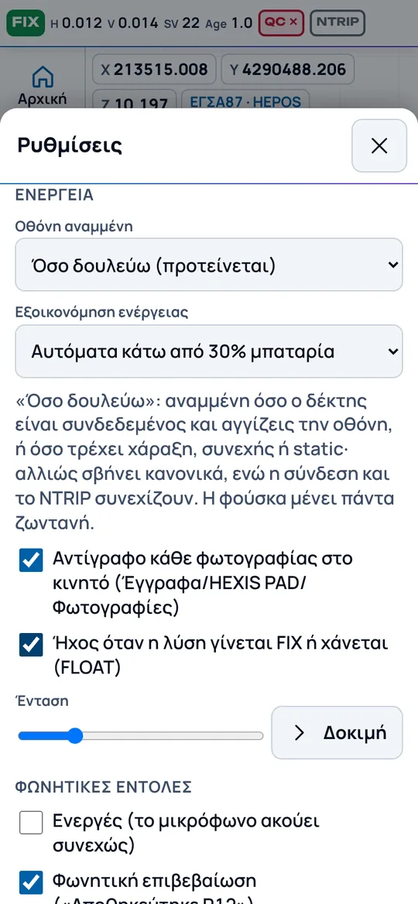
- Οθόνη αναμμένη «Όσο δουλεύω» (προεπιλογή): η οθόνη μένει αναμμένη όσο ο δέκτης είναι συνδεδεμένος και την αγγίζεις τα τελευταία 10 λεπτά, ή όσο τρέχει χάραξη, συνεχής αποτύπωση ή static. Αλλιώς σβήνει κανονικά, ενώ η σύνδεση με τον δέκτη και το NTRIP συνεχίζουν στο παρασκήνιο. Με ένα άγγιγμα ανάβει ξανά και είσαι εκεί που ήσουν.
- Ο χάρτης ξανασχεδιάζεται μόνο όταν αλλάζει κάτι ορατό: όταν κινείσαι ή αλλάζει η λύση. Όταν στέκεσαι ακίνητος, η επεξεργασία πέφτει περίπου στο 1/4.
- Εξοικονόμηση ενέργειας: ενεργοποιείται αυτόματα κάτω από 30% μπαταρία, όταν δεν φορτίζει. Τότε ο χάρτης και οι ενδείξεις ανανεώνονται 2 φορές το δευτερόλεπτο, και η οθόνη σβήνει μετά από 3 λεπτά χωρίς άγγιγμα, αντί για 10.
- Η φούσκα δεν επηρεάζεται ποτέ: μένει πάντα ζωντανή.
- Όλα ρυθμίζονται από Ρυθμίσεις → Ενέργεια: «Οθόνη αναμμένη» (Όσο δουλεύω / Πάντα / Όπως ορίζει το κινητό) και «Εξοικονόμηση ενέργειας» (Αυτόματα / Πάντα / Ποτέ).
- Συμβουλή: η φωτεινότητα της οθόνης είναι το μεγαλύτερο κόστος. Στον ήλιο χρειάζεται ψηλή, αλλά στη σκιά ή το βράδυ χαμήλωσέ τη από το κινητό.
Άδεια χρήσης
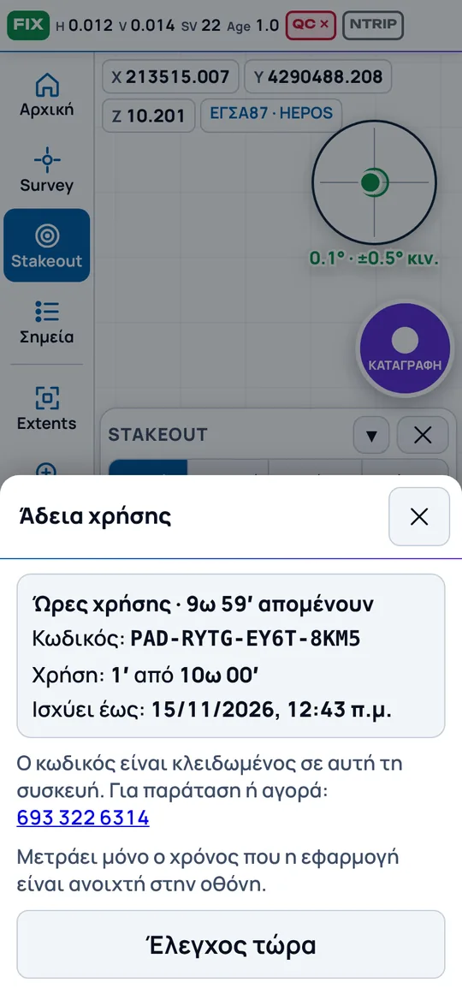
- Ο κωδικός κλειδώνει στη συσκευή όπου τον βάζεις πρώτη φορά. Σε άλλη συσκευή δεν δουλεύει. Αν αλλάξεις κινητό, ζήτα αποδέσμευση.
- Άδεια ωρών χρήσης (π.χ. 7 ή 10 ώρες πεδίου): μετράει μόνο ο χρόνος που η εφαρμογή είναι ανοιχτή στην οθόνη — όταν σβήνει η οθόνη ή βγαίνεις από την εφαρμογή, το μέτρημα σταματά. Προειδοποίηση στα 30′ και στα 10′ πριν τελειώσουν. Οι ώρες ισχύουν μέχρι την ημερομηνία που φαίνεται στην «Άδεια χρήσης».
- Δοκιμαστική άδεια ημερών: οι ημέρες μετράνε από τη στιγμή της ενεργοποίησης.
- Και στα δύο είδη η εφαρμογή δουλεύει κανονικά χωρίς ίντερνετ στο πεδίο· ο χρόνος στέλνεται όταν βρει σύνδεση. Η άδεια ελέγχεται αυτόματα όποτε υπάρχει ίντερνετ· αν η συσκευή μείνει πάνω από 7 ημέρες χωρίς καθόλου ίντερνετ (30 για συσκευή ιδιοκτήτη), ζητά έναν σύντομο έλεγχο: άνοιξε τα δεδομένα κινητής και πάτα Ενεργοποίηση.
- Η άδεια είναι υπογεγραμμένη από τον server και η εφαρμογή ελέγχει ότι είναι η γνήσια έκδοση. Κατέβαζε το HEXIS PAD μόνο από το hexis-app.gr/pad.html· τροποποιημένες εκδόσεις δεν ανοίγουν.
- Ρυθμίσεις → Άδεια χρήσης: βλέπεις τον κωδικό, πόσες ώρες ή ημέρες απομένουν, πόσο έχεις χρησιμοποιήσει και την ακριβή λήξη. Με Έλεγχος τώρα ενημερώνεται αμέσως, π.χ. μετά από παράταση.
- Όταν λήξει ή τελειώσουν οι ώρες, ανοίγει η οθόνη κωδικού. Τα έργα και τα σημεία σου μένουν στη συσκευή. Μετά την παράταση πατάς ξανά Ενεργοποίηση με τον ίδιο κωδικό και συνεχίζεις από εκεί που ήσουν.
- Η ώρα της συσκευής πρέπει να είναι σωστή. Αν γυρίσει πίσω, η εφαρμογή ζητά έλεγχο με ίντερνετ.
- Δικές σου συσκευές (ιδιοκτήτης): στην οθόνη κωδικού πάτα «Είσοδος ιδιοκτήτη με λογαριασμό HEXIS-APP» και βάλε το email και το συνθηματικό του hexis-app.gr. Ο λογαριασμός διαχειριστή ξεκλειδώνει τη συσκευή για πάντα, χωρίς λήξη και χωρίς μέτρημα ωρών, σε όσες συσκευές θέλεις (κινητό, tablet). Το συνθηματικό δεν αποθηκεύεται στη συσκευή.
- Για κωδικό, παράταση ή αγορά: 693 322 6314 (κλήση · WhatsApp · Viber).
12. Φωτογραφίες
📷 στη Survey (τελευταίο σημείο), στη χάραξη (τελευταίο χαραγμένο) ή από τη λεπτομέρεια σημείου. Κάθε φωτογραφία φέρει υδατογράφημα με όνομα, κωδικό, συντεταγμένες, ημερομηνία και λύση, και εξάγεται με το όνομα του σημείου.
Πού αποθηκεύονται: κάθε φωτογραφία μένει στο έργο, δεμένη με το σημείο της. Ανοίγει από τη λεπτομέρεια σημείου και βγαίνει με Εξαγωγή → Φωτογραφίες (ZIP) / Email. Επιπλέον γράφεται αυτόματα αντίγραφο στο κινητό, στον φάκελο Έγγραφα/HEXIS PAD/Φωτογραφίες/<έργο>/, με όνομα το όνομα του σημείου, ώστε να μη χαθεί ακόμα κι αν απεγκατασταθεί η εφαρμογή. Το αντίγραφο κλείνει από Ρυθμίσεις → «Αντίγραφο κάθε φωτογραφίας στο κινητό».
Καταγραφή στη χάραξη: όταν φτάσεις στο σημείο, πάτα ● ΚΑΤΑΓΡΑΦΗ. Μετριέται ως νέο σημείο, π.χ. «3n», με τις αποκλίσεις ΔX / ΔY / ΔZ από τον στόχο, και μπαίνει στο αρχείο χάραξης.